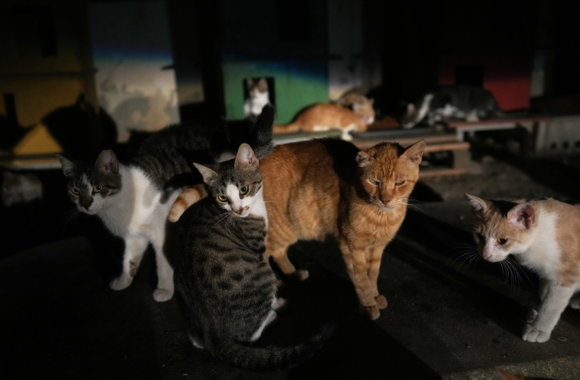

Decides que Mike debería acompañar a los gatos.
Mike llama la atención de los gatos, explicándoles que él también es un gato callejero como ellos, buscando una familia con quien vivir.
Los gatos, aunque un poco desconfiados al principio, se alegran de tener a alguien más como ellos con quien convivir. El callejón talvez no sea muy cómodo, pero es un lugar seguro y con buena compañía para Mike.
Mike talvez no tenga un hogar con alguien que tome cuidado de él, pero vive une buena vida con los gatos del callejón.